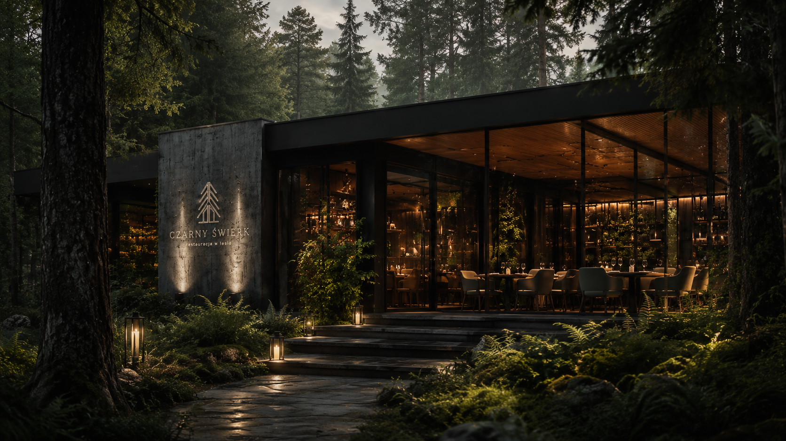
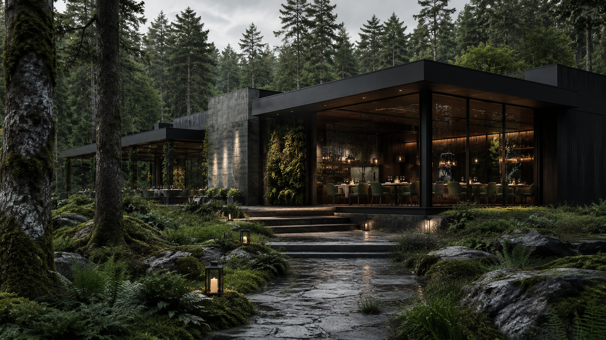
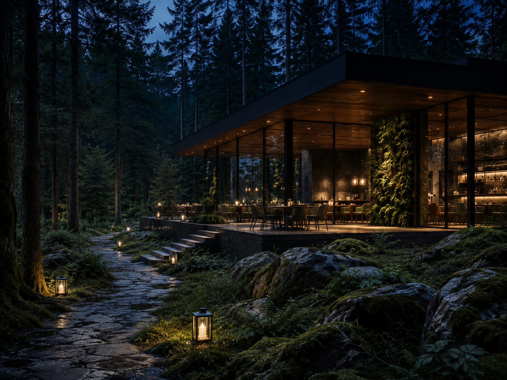
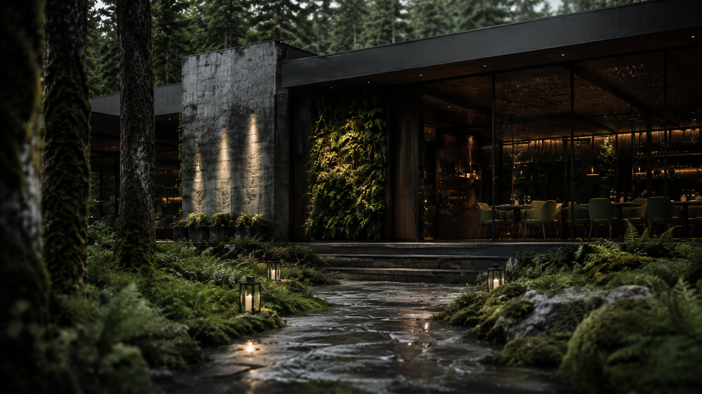
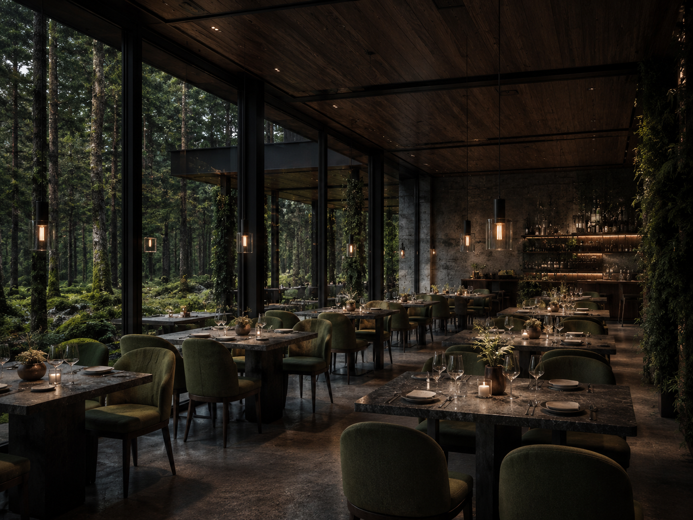

Ukryta architektura
Ciemna bryła, szkło i beton tworzą spokojny kontrast z zielenią lasu. Budynek jest widoczny dopiero wtedy, gdy gość jest już blisko wejścia.

Czarny Świerk to restauracja ukryta pomiędzy drzewami — nowoczesna kuchnia, przygaszone światło i wnętrze, które po zmroku staje się częścią lasu.
Koncepcja
Ciemna bryła, szkło i beton tworzą spokojny kontrast z zielenią lasu. Budynek jest widoczny dopiero wtedy, gdy gość jest już blisko wejścia.
Menu zmienia się z porą roku. Las jest inspiracją, ale nie dekoracją — pojawia się w ziołach, grzybach, dymie, sosach i sposobie podania.


Doświadczenie
Ścieżka prowadzi przez drzewa, a wejście nie zdradza wszystkiego od razu. To celowe — kolacja zaczyna się zanim gość usiądzie przy stole.
Galeria


Rezerwacje
Rezerwacje przyjmowane są od czwartku do niedzieli. Najlepsze miejsca znajdują się przy szklanej ścianie od strony lasu.